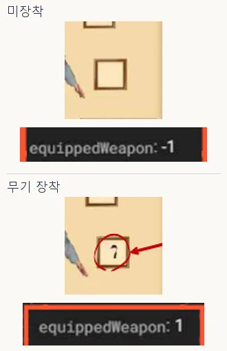
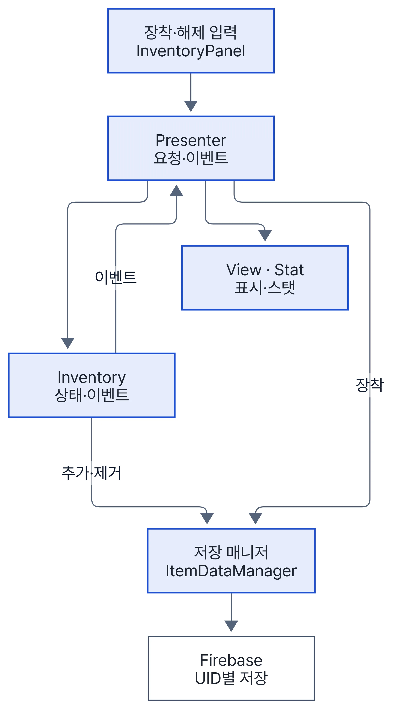
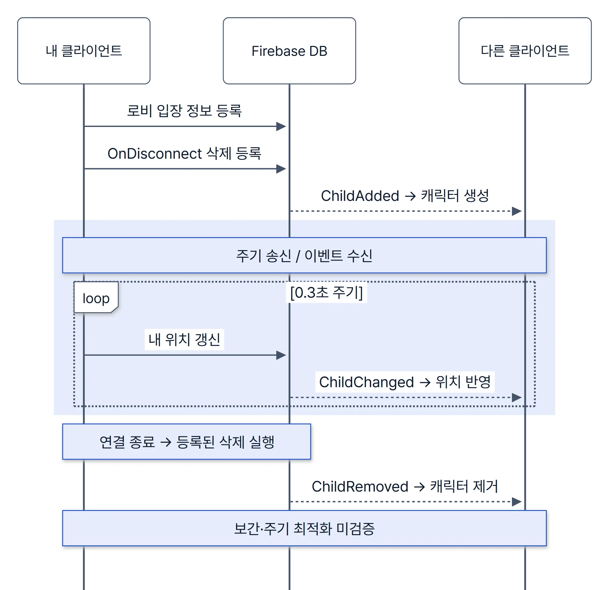

프로젝트 3Unity 모바일 소셜 게임기획자와 첫 협업
Jumac (주막의 전설)
Firebase 로비와 인벤토리·장착·저장 흐름을 클라이언트에서 연결했습니다.
1 장착 변경을 이벤트로 받아 UI·스탯·저장에 반영
- 문제
- 장착해도 화면에 바로 반영되지 않고, 다시 접속하면 장착이 풀리는 버그가 있었습니다. 장착 입력 하나를 인벤토리 UI, 장비 슬롯, 스탯 창, Firebase 저장값에 함께 반영해야 했습니다.
- 판단
- Presenter가 요청을 Model에 보내고, Model 이벤트(추가·제거·장착·해제)로 받은 결과를 화면·장비 저장에 넘기게 했습니다.
- 구현
- 아이템 정의(SO)와 런타임 Item을 나눠 UID별로 저장하고, 장비가 바뀌면 4종 장비 스탯을 다시 합산합니다. 관련 코드 InventoryPresenter.cs L14–38 · L40–53 · L98–124 · Inventory.cs L18–43 · 변경 커밋 1adaf23 · 46c7ecc · 동기화·재접속 버그 수정 ea471ce
- 결과
- 장착하면 화면·스탯·DB 값이 같은 이벤트로 갱신되고, 재접속 때 저장값으로 장착 상태를 되살립니다(ea471ce).


남은 한계: 추가·제거 저장은 Model이 직접 부르므로 MVP에 가까운 형태이고, 저장 식별자에 아이템 ID와 슬롯 번호가 섞여 있습니다.


Jumac에서 함께 맡은 일
| 한 일 | 근거 |
|---|---|
| 점수를 키로 쓰던 랭킹 사전의 동점 키 중복 예외를 목록 + 점수 내림차순 정렬로 수정 | LeaderBoard.cs L57–76 · 4ab4463 |
| 대화 중에는 이전 입력 액션 맵을 저장해 대화용으로 바꾸고, 끝나면 되돌린 뒤 종료 콜백 호출 | DialogueManager.cs L28–93 |
| 일반 전투 NPC에도 보이던 상점 버튼(같은 날 본인 통합 오류)을 상인 NPC 전용 선택지로 옮김 | edbb6fe |
| 팀장으로 기획자 작업용 씬을 만들고 기획 UI·맵을 개발 씬에 통합 | 286b5b2 · d059f39 |
Jumac사례 2본인 구현
2 Firebase 로비의 원격 캐릭터 이동과 구독 정리
- 문제
- Firebase로 받은 좌표로 바로 옮기면 원격 캐릭터가 순간이동처럼 보였고, 로비를 나간 뒤에도 DB 콜백이 남았습니다.
- 구현
- 내 위치를 0.3초마다 UID 노드에 쓰고, 다른 클라이언트는 변경 이벤트로 받은 좌표를 원격 캐릭터의 NavMesh 목적지로 넘깁니다. 구독과 해제는 보관한 같은 DB 참조로 맞추고, 연결 끊김 시 자동 삭제와 비활성화 시 직접 삭제를 함께 둡니다. 관련 코드 LobbyManager.cs L74–162 · RemotePlayer.cs L60–63 · 원격 이동 최초 구현 3ad7b83 · 전송 주기 0.1→0.3초 0bd89d0 · a61adbf · 03a28c8
- 결과
- 원격 캐릭터는 받은 좌표로 경로를 따라 걷고, 로비를 나가면 구독이 해제되도록 고쳤습니다. 이동 궤적·점프는 재생하지 않습니다.

